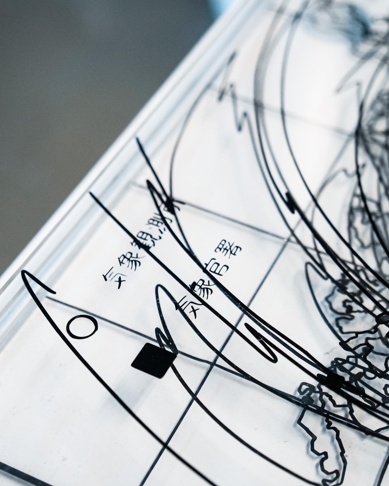
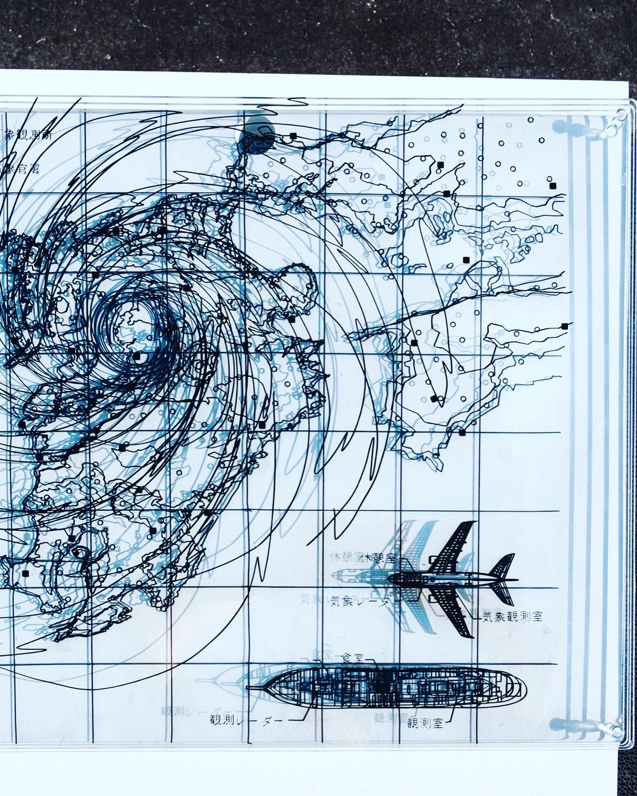
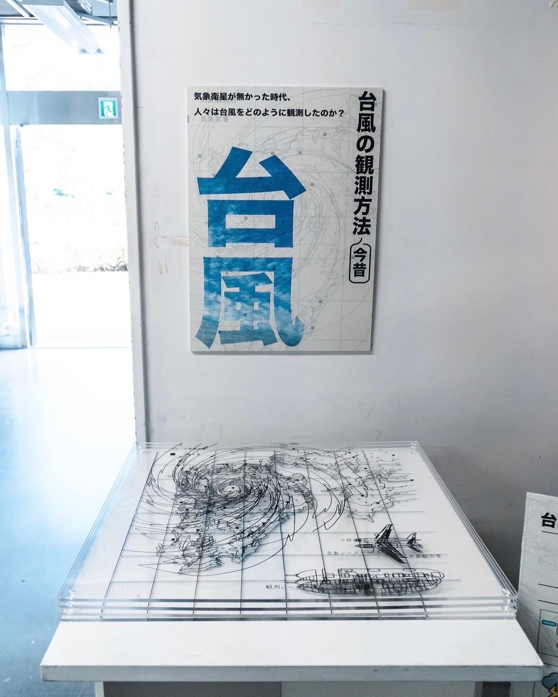

台風の
カシカ
2023年は台風の多い年でした。 ニュースのリポーターは、風に煽られながら、私たちに、いかにひどい状況を伝える。2023年ではニュースの定番ネタだと思います。私はふと今にも飛ばされそうな強風の中、設備が整っていない過去の気象予報士たちはどのような方法で台風を観測し、 現代にもつながるデータを収集したのか疑問に思い、観測方法とデータを３Dで表現する挑戦をしました。

2023年は台風の多い年でした。 ニュースのリポーターは、風に煽られながら、私たちに、いかにひどい状況を伝える。2023年ではニュースの定番ネタだと思います。私はふと今にも飛ばされそうな強風の中、設備が整っていない過去の気象予報士たちはどのような方法で台風を観測し、 現代にもつながるデータを収集したのか疑問に思い、観測方法とデータを３Dで表現する挑戦をしました。


